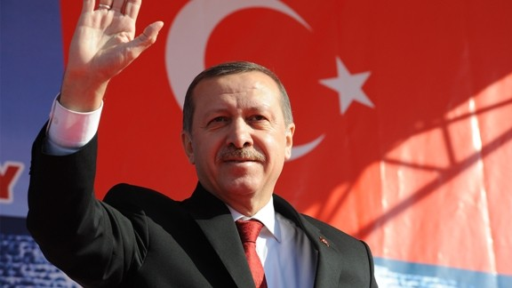
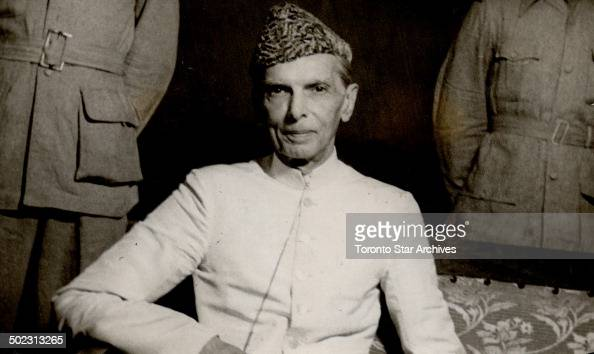

" Imran Ahmed Khan Niazi " (born in 5 October 1952) served as 22nd Prime Minister of Pakistan and he is the chairman of the Pakistan Tehreek-e-Insaf (PTI). Before entering politics, Khan was an international cricketer and captain of the Pakistan national cricket team, which he led to victory in the 1992 Cricket World Cup. He was chancellor of the University of Bradford in the United Kingdom from 2005 to 2014.

" Recep Tayyip Erdoğan " (born in 26 February 1954) is a Turkish politician serving as the current President of Turkey. He previously served as Prime Minister of Turkey from 2003 to 2014 and as Mayor of Istanbul from 1994 to 1998. He founded the Justice and Development Party (AKP) in 2001, leading it to election victories in 2002, 2007, and 2011 before being required to stand down upon his election as President in 2014. He later returned to the AKP leadership in 2017 following the constitutional referendum that year. Coming from an Islamist political background and self-describing as a conservative democrat, he has promoted socially conservative and populist policies during his administration.

" Muhammad Ali Jinnah " (born in 25 December 1876 – 11 September 1948) was a barrister, politician and the founder of Pakistan. Jinnah served as the leader of the All-India Muslim League from 1913 until the inception of Pakistan on 14 August 1947, and then as the Dominion of Pakistan's first Governor-General until his death. He is revered in Pakistan as the Quaid-i-Azam and Baba-i-Qaum ("Father of the Nation"). His birthday is observed as a national holiday in Pakistan.